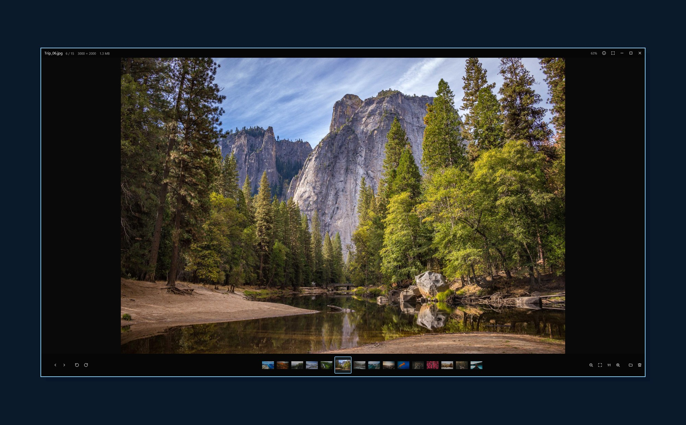

Photos, instantly.
A fast, no-nonsense photo viewer. Double-click a photo and it opens over your dimmed desktop with the whole folder underneath. Hold → to fly through it. Esc and it's gone.
curl -fsSL https://nominy.github.io/vitreus/install | sh
One script: downloads the latest release, checks its checksum, installs without admin rights and makes Vitreus your photo viewer. Options & uninstall

Instant
Opens in a blink, shows the camera's embedded preview within milliseconds, then the full image.
Fly-through
Hold an arrow key and glide through thousands of photos. Neighbours are decoded ahead of you.
Sharp at every zoom
Screen-sized decode for viewing, full resolution the moment you zoom past it. Zoom stops at fit and 100%.
Everything you shoot
JPEG, HEIC, AVIF, JPEG XL, camera RAW (CR3, NEF, ARW, DNG, RAF and more), PSD, PNG, animated GIF/WebP/APNG, TIFF, SVG and more.
Hands off your files
Rotation is view-only. No library, no import, no account, no telemetry. Delete goes to the trash.
Native everywhere
One GPU-accelerated Rust binary for Windows, macOS and Linux, built on GPUI.